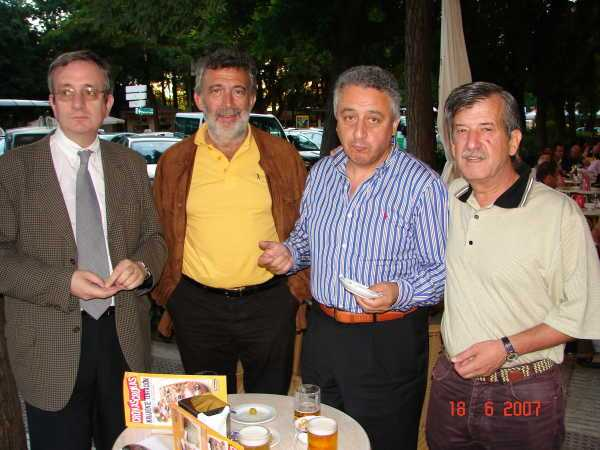

Los prolegómenos, que siempre son importantes, especialmente a la hora de pagar: Bitaubé, como si con él no fuese...; Del Rey, Escribano, que aprendió en el "Sitio" aquello de que con la boca llena no se habla (cosa rara en él....) y Barrallo, haciendo el amago. Morris-son, detrás de la cámara.
Pinchar en las fotos para ver las siguientes
 |